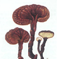
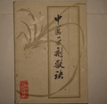

中医常识
中医指中国传统医学，它承载着中国古代人民同疾病作斗争的经验和理论知识。是我国一项民族文化遗产。它是在古代朴素的唯物论和自发的辨证法思想指导下，通过长期医疗实践逐步形成并发展为独特的医学理论体系。在研究方法上，具有朴素的系统论、控制论和信息论内容；孕育着很多现代医学和生物学的新理论、新学说的胚胎和萌芽，正是这些宝贵精髓，赋予了它强大的生命活力。
更多
中医理论
中医理论
中医基础理论主要包括分形阴阳五行学说，藏象五系统学说，五运六气学说...
- 阴阳五行说与科学及真理之关系
- 中医理论八议之一：中医百年沉浮说明了什么
- 中医理论八议之二：中医启示人类重新审视科学
- 中医理论八议之三：中医学生存的哲学依据与经络的时间本质
- 中医理论八议之四：中医学是象科学的代表
- 中医理论八议之五：阴阳代表一条与西方科学不同的认识路线
- >中医理论八议之六：中医哲学是具元创性的科学哲学
- 中医理论八议之七：中医哲学对人类的重要贡献
更多
中药常识
中药常识
中药按加工工艺分为中成药、中药材。中药主要起源于中国，除了植物药...
- 煎煮中药前、中、后有需要注意的细节
- 紫金皮并非紫荆皮临床上不能相互替代[图]
- 中药正确服法之根据据剂型服药法[图]
- 中药正确服法之根据药物功效服药法[图]
- 中药正确服法之根据药性服药法[图]
- 补血止血话阿胶糖尿病患者服用遵医嘱[图]
- 三七粉、西洋参粉可以一起冲着喝吗？[图]
- 汤剂煎服法探讨[图]
更多
中药词典
中药词典
明代李时珍编《本草纲目》,根据以前本草分类方法略加修改,把药物分水、火...
- 白贝齿[图]
- 农吉利[图]
- 秋梨[图]
- 螃蟹壳[图]
- 光明子[图]
- 笔管草[图]
- 山香圆叶[图]
- 蔓荆叶[图]
更多
中药方剂
中药方剂
中药方剂即中药药方与调剂，是古代医家经过长期的医疗实践，将几种药物...
- 人参干姜汤
- 人参一捻金
- 人参丁香散
- 人参七味丸
- 人参八仙丹
- 人参八味汤
- 人参煎丸
- sa人参膏子
更多
中医文化
 中医文化
中医文化
天人合一，形神一体的整体观。中国传统哲学十分强调自然界是一个普遍...
- <《本草纲目》中关于中医药“抗疫”的记载[图]
- 《广瘟疫论》“遗证”发挥
- 医者行
- 说疫
- 既是节气也是节日的清明
- 中医治疫 源远流长[图]
- 大药苍生
- 红楼梦与人参养荣丸[图]
更多
中成药大全
 中成药大全
中成药大全
中成药是临床反复使用、安全有效、剂型固定，并采取合理工艺制备成质量...
- 通心络等三药成为九版《内科学》推荐用药
- 黄葵胶囊控制尿蛋白效果更胜西药[图]
- 循证研究彰显“祖师麻膏药”临床价值
- 杞菊地黄口服液有益于高脂血症
- 止咳祛痰中成药六大禁忌
- 胃肠型感冒如何选中成药
- 家庭存放常用药讲究多
- 哪些人能吃逍遥丸